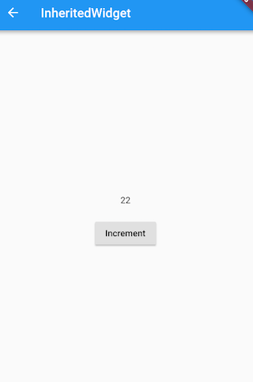

7.2 数据共享（InheritedWidget）
7.2.1 InheritedWidget
我们先介绍一下InheritedWidget组件，然后重点探讨一下State类中didChangeDependencies 回调与InheritedWidget组件的关系。
1. 简介
InheritedWidget 是 Flutter 中非常重要的一个功能型组件，它提供了一种在 widget 树中从上到下共享数据的方式，比如我们在应用的根 widget 中通过InheritedWidget共享了一个数据，那么我们便可以在任意子widget 中来获取该共享的数据！这个特性在一些需要在整个 widget 树中共享数据的场景中非常方便！如Flutter SDK中正是通过 InheritedWidget 来共享应用主题（Theme）和 Locale (当前语言环境)信息的。
InheritedWidget和 React 中的 context 功能类似，和逐级传递数据相比，它们能实现组件跨级传递数据。InheritedWidget的在 widget 树中数据传递方向是从上到下的，这和通知Notification（将在下一章中介绍）的传递方向正好相反。
下面我们看一下之前“计数器”示例应用程序的InheritedWidget版本。需要说明的是，本示例主要是为了演示InheritedWidget的功能特性，并不是计数器的推荐实现方式。
首先，我们通过继承InheritedWidget，将当前计数器点击次数保存在ShareDataWidget的data属性中：
class ShareDataWidget extends InheritedWidget {
ShareDataWidget({
Key? key,
required this.data,
required Widget child,
}) : super(key: key, child: child);
final int data; //需要在子树中共享的数据，保存点击次数
//定义一个便捷方法，方便子树中的widget获取共享数据
static ShareDataWidget? of(BuildContext context) {
return context.dependOnInheritedWidgetOfExactType<ShareDataWidget>();
}
//该回调决定当data发生变化时，是否通知子树中依赖data的Widget重新build
@override
bool updateShouldNotify(ShareDataWidget old) {
return old.data != data;
}
}
然后我们实现一个子组件 _TestWidget，在其build方法中引用ShareDataWidget中的数据。同时，在其didChangeDependencies() 回调中打印日志：
class _TestWidget extends StatefulWidget {
@override
__TestWidgetState createState() => __TestWidgetState();
}
class __TestWidgetState extends State<_TestWidget> {
@override
Widget build(BuildContext context) {
//使用InheritedWidget中的共享数据
return Text(ShareDataWidget.of(context)!.data.toString());
}
@override //下文会详细介绍。
void didChangeDependencies() {
super.didChangeDependencies();
//父或祖先widget中的InheritedWidget改变(updateShouldNotify返回true)时会被调用。
//如果build中没有依赖InheritedWidget，则此回调不会被调用。
print("Dependencies change");
}
}
2. didChangeDependencies
在之前介绍StatefulWidget时，我们提到State对象有一个didChangeDependencies回调，它会在“依赖”发生变化时被Flutter 框架调用。而这个“依赖”指的就是子 widget 是否使用了父 widget 中InheritedWidget的数据！如果使用了，则代表子 widget 有依赖；如果没有使用则代表没有依赖。这种机制可以使子组件在所依赖的InheritedWidget变化时来更新自身！比如当主题、locale(语言)等发生变化时，依赖其的子 widget 的didChangeDependencies方法将会被调用。
最后，我们创建一个按钮，每点击一次，就将ShareDataWidget的值自增：
class InheritedWidgetTestRoute extends StatefulWidget {
@override
_InheritedWidgetTestRouteState createState() => _InheritedWidgetTestRouteState();
}
class _InheritedWidgetTestRouteState extends State<InheritedWidgetTestRoute> {
int count = 0;
@override
Widget build(BuildContext context) {
return Center(
child: ShareDataWidget( //使用ShareDataWidget
data: count,
child: Column(
mainAxisAlignment: MainAxisAlignment.center,
children: <Widget>[
Padding(
padding: const EdgeInsets.only(bottom: 20.0),
child: _TestWidget(),//子widget中依赖ShareDataWidget
),
ElevatedButton(
child: Text("Increment"),
//每点击一次，将count自增，然后重新build,ShareDataWidget的data将被更新
onPressed: () => setState(() => ++count),
)
],
),
),
);
}
}
运行后界面如图7-1所示：

每点击一次按钮，计数器就会自增，控制台就会打印一句日志：
I/flutter ( 8513): Dependencies change
可见依赖发生变化后，其didChangeDependencies()会被调用。但是读者要注意，如果_TestWidget的build方法中没有使用ShareDataWidget的数据，那么它的didChangeDependencies()将不会被调用，因为它并没有依赖ShareDataWidget。例如，我们将__TestWidgetState代码改为下面这样，didChangeDependencies()将不会被调用:
class __TestWidgetState extends State<_TestWidget> {
@override
Widget build(BuildContext context) {
// 使用InheritedWidget中的共享数据
// return Text(ShareDataWidget.of(context)!.data.toString());
return Text("text");
}
@override
void didChangeDependencies() {
super.didChangeDependencies();
// build方法中没有依赖InheritedWidget，此回调不会被调用。
print("Dependencies change");
}
}
上面的代码中，我们将build()方法中依赖ShareDataWidget的代码注释掉了，然后返回一个固定Text，这样一来，当点击Increment按钮后，ShareDataWidget的data虽然发生变化，但由于__TestWidgetState并未依赖ShareDataWidget，所以__TestWidgetState的didChangeDependencies方法不会被调用。其实，这个机制很好理解，因为在数据发生变化时只对使用该数据的Widget更新是合理并且性能友好的。
思考题：Flutter 框架是怎么知道子 widget 有没有依赖父级 InheritedWidget 的？
应该在didChangeDependencies()中做什么？
一般来说，子 widget 很少会重写此方法，因为在依赖改变后 Flutter 框架也都会调用build()方法重新构建组件树。但是，如果你需要在依赖改变后执行一些昂贵的操作，比如网络请求，这时最好的方式就是在此方法中执行，这样可以避免每次build()都执行这些昂贵操作。
7.2.2 深入了解InheritedWidget
现在来思考一下，在上面的例子中，如果我们只想在__TestWidgetState中引用ShareDataWidget数据，但却不希望在ShareDataWidget发生变化时调用__TestWidgetState的didChangeDependencies()方法应该怎么办？其实答案很简单，我们只需要将ShareDataWidget.of()的实现改一下即可：
//定义一个便捷方法，方便子树中的widget获取共享数据
static ShareDataWidget of(BuildContext context) {
//return context.dependOnInheritedWidgetOfExactType<ShareDataWidget>();
return context.getElementForInheritedWidgetOfExactType<ShareDataWidget>()!.widget as ShareDataWidget;
}
唯一的改动就是获取ShareDataWidget对象的方式，把dependOnInheritedWidgetOfExactType()方法换成了context.getElementForInheritedWidgetOfExactType<ShareDataWidget>().widget，那么他们到底有什么区别呢，我们看一下这两个方法的源码（实现代码在Element类中，Context和Element的关系我们将在后面专门介绍）：
@override
InheritedElement getElementForInheritedWidgetOfExactType<T extends InheritedWidget>() {
final InheritedElement ancestor = _inheritedWidgets == null ? null : _inheritedWidgets[T];
return ancestor;
}
@override
InheritedWidget dependOnInheritedWidgetOfExactType({ Object aspect }) {
assert(_debugCheckStateIsActiveForAncestorLookup());
final InheritedElement ancestor = _inheritedWidgets == null ? null : _inheritedWidgets[T];
//多出的部分
if (ancestor != null) {
return dependOnInheritedElement(ancestor, aspect: aspect) as T;
}
_hadUnsatisfiedDependencies = true;
return null;
}
我们可以看到，dependOnInheritedWidgetOfExactType() 比 getElementForInheritedWidgetOfExactType()多调了dependOnInheritedElement方法，dependOnInheritedElement源码如下：
@override
InheritedWidget dependOnInheritedElement(InheritedElement ancestor, { Object aspect }) {
assert(ancestor != null);
_dependencies ??= HashSet<InheritedElement>();
_dependencies.add(ancestor);
ancestor.updateDependencies(this, aspect);
return ancestor.widget;
}
可以看到dependOnInheritedElement方法中主要是注册了依赖关系！看到这里也就清晰了，调用dependOnInheritedWidgetOfExactType() 和 getElementForInheritedWidgetOfExactType()的区别就是前者会注册依赖关系，而后者不会，所以在调用dependOnInheritedWidgetOfExactType()时，InheritedWidget和依赖它的子孙组件关系便完成了注册，之后当InheritedWidget发生变化时，就会更新依赖它的子孙组件，也就是会调这些子孙组件的didChangeDependencies()方法和build()方法。而当调用的是 getElementForInheritedWidgetOfExactType()时，由于没有注册依赖关系，所以之后当InheritedWidget发生变化时，就不会更新相应的子孙Widget。
注意，如果将上面示例中ShareDataWidget.of()方法实现改成调用getElementForInheritedWidgetOfExactType()，运行示例后，点击"Increment"按钮，会发现__TestWidgetState 的didChangeDependencies()方法确实不会再被调用，但是其build()仍然会被调用！造成这个的原因其实是，点击"Increment"按钮后，会调用_InheritedWidgetTestRouteState的setState()方法，此时会重新构建整个页面，由于示例中，__TestWidget 并没有任何缓存，所以它也都会被重新构建，所以也会调用build()方法。
那么，现在就带来了一个问题：实际上，我们只想更新子树中依赖了ShareDataWidget的组件，而现在只要调用_InheritedWidgetTestRouteState的setState()方法，所有子节点都会被重新build，这很没必要，那么有什么办法可以避免呢？答案是缓存！一个简单的做法就是通过封装一个StatefulWidget，将子Widget树缓存起来，具体做法下一节我们将通过实现一个Provider Widget 来演示如何缓存，以及如何利用InheritedWidget 来实现 Flutter 全局状态共享。